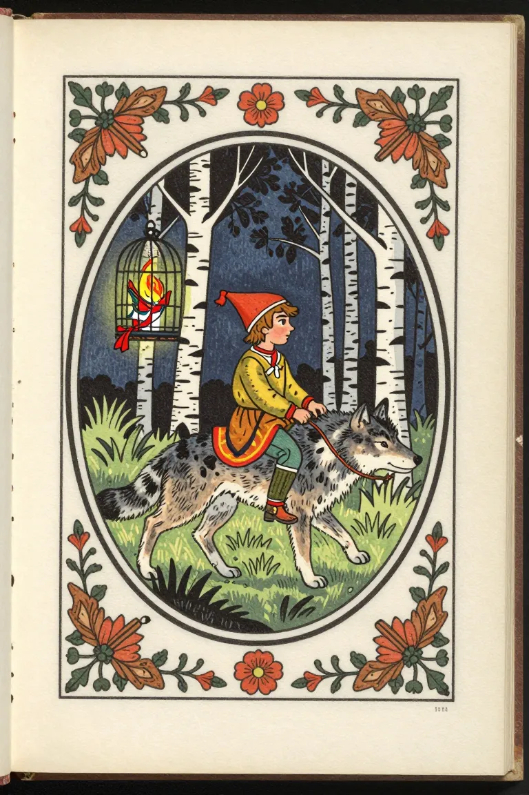

Книжная графика «Мира искусства»
печать · 1899–1930 · также: Стиль Билибина, Книжная графика «Мира искусства», Графика Билибина, Мир искусства
Твёрдый ровный чёрный контур пером, в манере ксилографии, заливают плоскими акварельными тонами. Контурная линия и тона печатаются отдельными прогонами. Народный орнамент обрамляет каждую страницу.

Главная идея
Одна твёрдая линия и плоские тона внутри орнаментальной рамки создают сказочную страницу, которая читается единым целым с каймой и буквами.
Принципы дизайна
- Рисуйте контур пером одной ровной толщины около 0,4–0,6 мм в размере оттиска; не раздувайте и не сужайте его.
- Заливайте каждую область одним плоским тоном без тушёвки; берите 3–6 тонов из набора киноварь, берлинская лазурь, охра и зелень.
- Дерево, мех, ткань и воду трактуйте повторяющимися узорами коротких штрихов внутри контура.
- Обрамляйте каждую картину каймой народного орнамента и рисуйте буквы заголовка от руки в тон.
- Рисуйте картину, кайму и блок текста как одну страницу.
- Печатайте чёрную линию как контурную форму, а тона отдельными прогонами; держите приводку в пределах 0,5 мм.
- Берите гладкую кремовую бумагу, на которой плоский цвет виден без фактуры.
Антипаттерны
- Тушёвка, лепка форм и градиент
- Эскизная свободная линия меняющейся толщины
- Картина без каймы и без рукописных букв
- Фотографический реализм
- Ярко-белый или глянцевый мелованный лист
Палитра
Родословная
- Перекликается с
- Предмет в стиле ар-нуво
- Развился из
- Хромолитографический плакат, Русский лубок
- Развился в
- Украинская барочная графика Нарбута
Использовать
SKILL.md · tokens.css · исходный JSON · открыть в демо